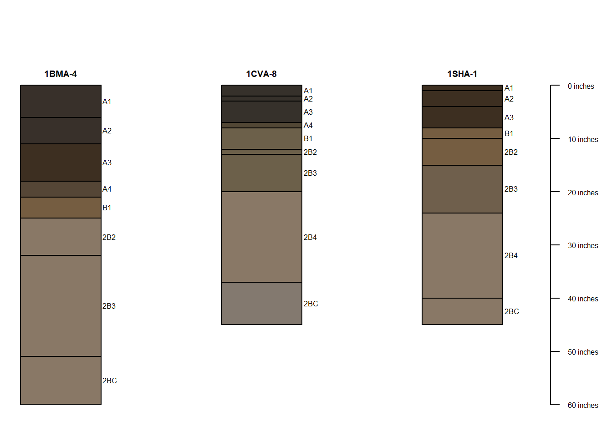
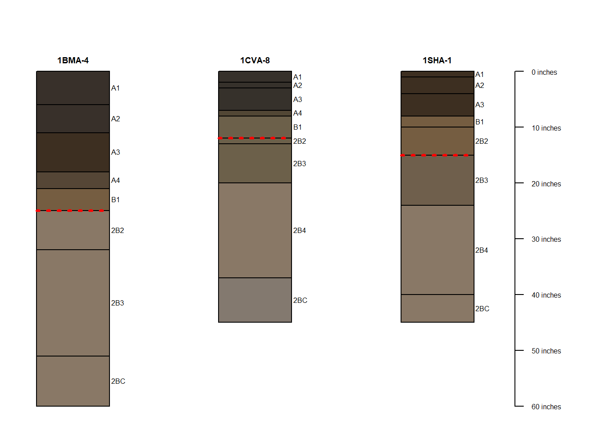

3 Mower County Pedons
date: 2020-09-06
3.1 Overview
Visualizing some soil profile descriptions from SL in Mower County.
This SPC plotting ideas post was helpful but I had to dig in the documentation to find it - not linked on the main aqp webpage? http://ncss-tech.github.io/AQP/aqp/SPC-plotting-ideas.html
knitr::opts_chunk$set(echo = TRUE)
knitr::opts_chunk$set(tidy = TRUE)
knitr::opts_chunk$set(tidy.opts = list(width.cutoff=60))
library(tidyverse)
library(aqp)
library(readxl)
library(munsell)3.2 Load data
pedons <- read_excel("./data/mower_pedons.xlsx") %>% as.data.frame()
sites <- read_excel("./data/mower_site.xlsx")3.3 Munsell colors conversion
# convert munsell colors to R compatible colors and add
# horizon ID
with_colors <- pedons %>% mutate(soil_color = munsell2rgb(hue,
value, chroma), hzID = c(1:nrow(pedons)))
with_colors## id top bottom name hue value chroma soil_color hzID
## 1 1CVA-8 0 2 A1 2.5Y 2.5 1 #36312BFF 1
## 2 1CVA-8 2 3 A2 2.5Y 2.5 1 #36312BFF 2
## 3 1CVA-8 3 7 A3 2.5Y 2.5 1 #36312BFF 3
## 4 1CVA-8 7 8 A4 2.5Y 3.0 2 #524735FF 4
## 5 1CVA-8 8 12 B1 2.5Y 4.0 2 #6C604AFF 5
## 6 1CVA-8 12 13 2B2 2.5Y 4.0 2 #6C604AFF 6
## 7 1CVA-8 13 20 2B3 2.5Y 4.0 2 #6C604AFF 7
## 8 1CVA-8 20 37 2B4 10YR 5.0 2 #897866FF 8
## 9 1CVA-8 37 45 2BC 10YR 5.0 1 #83796FFF 9
## 10 1BMA-4 0 6 A1 10YR 2.0 1 #38302AFF 10
## 11 1BMA-4 6 11 A2 10YR 2.0 1 #38302AFF 11
## 12 1BMA-4 11 18 A3 10YR 2.0 2 #3D2F21FF 12
## 13 1BMA-4 18 21 A4 10YR 3.0 2 #554636FF 13
## 14 1BMA-4 21 25 B1 10YR 4.0 3 #755D41FF 14
## 15 1BMA-4 25 32 2B2 10YR 5.0 2 #897866FF 15
## 16 1BMA-4 32 51 2B3 10YR 5.0 2 #897866FF 16
## 17 1BMA-4 51 60 2BC 10YR 5.0 2 #897866FF 17
## 18 1SHA-1 0 1 A1 10YR 2.0 2 #3D2F21FF 18
## 19 1SHA-1 1 4 A2 10YR 2.0 2 #3D2F21FF 19
## 20 1SHA-1 4 8 A3 10YR 2.0 2 #3D2F21FF 20
## 21 1SHA-1 8 10 B1 10YR 4.0 3 #755D41FF 21
## 22 1SHA-1 10 15 2B2 10YR 4.0 3 #755D41FF 22
## 23 1SHA-1 15 24 2B3 10YR 4.0 2 #6F5F4CFF 23
## 24 1SHA-1 24 40 2B4 10YR 5.0 2 #897866FF 24
## 25 1SHA-1 40 45 2BC 10YR 5.0 2 #897866FF 253.4 Promote dataframe to SPC
SPC = soil profile collection (S4 object)
# promote dataframe to SPC object
depths(with_colors) <- id ~ top + bottom## using `hzID` as a unique horizon ID# should be 'SoilProfileCollection'
class(with_colors)## [1] "SoilProfileCollection"
## attr(,"package")
## [1] "aqp"# inspect output
str(with_colors)## Formal class 'SoilProfileCollection' [package "aqp"] with 11 slots
## ..@ idcol : chr "id"
## ..@ hzidcol : chr "hzID"
## ..@ hzdesgncol : chr(0)
## ..@ hztexclcol : chr(0)
## ..@ depthcols : chr [1:2] "top" "bottom"
## ..@ metadata :'data.frame': 1 obs. of 1 variable:
## .. ..$ depth_units: chr "cm"
## ..@ horizons :'data.frame': 25 obs. of 9 variables:
## .. ..$ id : chr [1:25] "1BMA-4" "1BMA-4" "1BMA-4" "1BMA-4" ...
## .. ..$ top : num [1:25] 0 6 11 18 21 25 32 51 0 2 ...
## .. ..$ bottom : num [1:25] 6 11 18 21 25 32 51 60 2 3 ...
## .. ..$ name : chr [1:25] "A1" "A2" "A3" "A4" ...
## .. ..$ hue : chr [1:25] "10YR" "10YR" "10YR" "10YR" ...
## .. ..$ value : num [1:25] 2 2 2 3 4 5 5 5 2.5 2.5 ...
## .. ..$ chroma : num [1:25] 1 1 2 2 3 2 2 2 1 1 ...
## .. ..$ soil_color: chr [1:25] "#38302AFF" "#38302AFF" "#3D2F21FF" "#554636FF" ...
## .. ..$ hzID : int [1:25] 1 2 3 4 5 6 7 8 9 10 ...
## ..@ site :'data.frame': 3 obs. of 1 variable:
## .. ..$ id: chr [1:3] "1BMA-4" "1CVA-8" "1SHA-1"
## ..@ sp :Formal class 'SpatialPoints' [package "sp"] with 3 slots
## .. .. ..@ coords : num [1, 1] 0
## .. .. ..@ bbox : logi [1, 1] NA
## .. .. ..@ proj4string:Formal class 'CRS' [package "sp"] with 1 slot
## .. .. .. .. ..@ projargs: chr NA
## ..@ diagnostic :'data.frame': 0 obs. of 0 variables
## ..@ restrictions:'data.frame': 0 obs. of 0 variables# change the depth units (metadata/leabel) to inches -
# default is cm
depth_units(with_colors) <- "inches"
# check that unit conversion worked
metadata(with_colors)## depth_units
## 1 inches3.5 Plot the SPC object
Most basic version here.
# margin specification (bottom, left, top, right) default is
# typically c(5,4,4,2)
par(mar = c(1, 1, 1, 1))
plot(with_colors, name = "name", width = 0.2)
3.6 Add dashed lines
Want to represent the lag line (transition to older till parent material) with a dotted line across each soil profile.
# grab lag line depth from sites df
lag <- sites %>% select(id, lag_in)
# need the ids in alpha order to align with pedons plotted
# alphabetically below, (otherwise the lag lines get plotted
# on the wrong pedon). Find a more robust solution for this
# in the future
lag_sorted <- lag[order(lag$id), ]
# keep in mind that each pedon is centered over its integer
# index on the x-axis of the plot (first pedon centered over
# 1, second over 2, etc.)
x.pos <- 1:length(with_colors)
# segments function needs vectors of coordinates: specifies
# start/end the line segments see
# https://bookdown.org/ndphillips/YaRrr/low-level-plotting-functions.html
from.x <- c(x.pos - 0.2)
to.x <- c(x.pos + 0.2)
from.y <- lag_sorted$lag_in
to.y <- lag_sorted$lag_in
par(mar = c(0, 2, 0, 2))
plot(with_colors, name = "name", width = 0.2)
# lwd is line width, lty is linetype
segments(x0 = from.x, x1 = to.x, y0 = from.y, y1 = to.y, col = "red",
lwd = 3, lty = 3)
3.7 References
Low level plotting functions, including segments() and text(), which might be useful for adding additional labels (such as “lag line”) in the future: https://bookdown.org/ndphillips/YaRrr/low-level-plotting-functions.html
SPC plotting ideas: http://ncss-tech.github.io/AQP/aqp/SPC-plotting-ideas.html
devtools::session_info()## - Session info ---------------------------------------------------------------
## setting value
## version R version 3.6.3 (2020-02-29)
## os Windows 10 x64
## system x86_64, mingw32
## ui RTerm
## language (EN)
## collate English_United States.1252
## ctype English_United States.1252
## tz America/Chicago
## date 2020-09-06
##
## - Packages -------------------------------------------------------------------
## package * version date lib source
## aqp * 1.19 2020-01-24 [1] CRAN (R 3.6.3)
## assertthat 0.2.1 2019-03-21 [1] CRAN (R 3.6.3)
## backports 1.1.8 2020-06-17 [1] CRAN (R 3.6.3)
## blob 1.2.1 2020-01-20 [1] CRAN (R 3.6.3)
## bookdown 0.20 2020-06-23 [1] CRAN (R 3.6.3)
## broom 0.7.0 2020-07-09 [1] CRAN (R 3.6.3)
## callr 3.4.3 2020-03-28 [1] CRAN (R 3.6.3)
## cellranger 1.1.0 2016-07-27 [1] CRAN (R 3.6.3)
## cli 2.0.2 2020-02-28 [1] CRAN (R 3.6.3)
## cluster 2.1.0 2019-06-19 [2] CRAN (R 3.6.3)
## codetools 0.2-16 2018-12-24 [2] CRAN (R 3.6.3)
## colorspace 1.4-1 2019-03-18 [1] CRAN (R 3.6.1)
## crayon 1.3.4 2017-09-16 [1] CRAN (R 3.6.3)
## curl 4.3 2019-12-02 [1] CRAN (R 3.6.3)
## DBI 1.1.0 2019-12-15 [1] CRAN (R 3.6.3)
## dbplyr 1.4.4 2020-05-27 [1] CRAN (R 3.6.3)
## desc 1.2.0 2018-05-01 [1] CRAN (R 3.6.3)
## devtools 2.3.0 2020-04-10 [1] CRAN (R 3.6.3)
## digest 0.6.25 2020-02-23 [1] CRAN (R 3.6.3)
## dplyr * 1.0.0 2020-05-29 [1] CRAN (R 3.6.3)
## ellipsis 0.3.1 2020-05-15 [1] CRAN (R 3.6.3)
## evaluate 0.14 2019-05-28 [1] CRAN (R 3.6.3)
## fansi 0.4.1 2020-01-08 [1] CRAN (R 3.6.3)
## forcats * 0.5.0 2020-03-01 [1] CRAN (R 3.6.3)
## formatR 1.7 2019-06-11 [1] CRAN (R 3.6.3)
## fs 1.4.2 2020-06-30 [1] CRAN (R 3.6.3)
## generics 0.0.2 2018-11-29 [1] CRAN (R 3.6.3)
## ggplot2 * 3.3.2 2020-06-19 [1] CRAN (R 3.6.3)
## glue 1.4.1 2020-05-13 [1] CRAN (R 3.6.3)
## gtable 0.3.0 2019-03-25 [1] CRAN (R 3.6.3)
## haven 2.3.1 2020-06-01 [1] CRAN (R 3.6.3)
## hms 0.5.3 2020-01-08 [1] CRAN (R 3.6.3)
## htmltools 0.5.0 2020-06-16 [1] CRAN (R 3.6.3)
## httr 1.4.1 2019-08-05 [1] CRAN (R 3.6.3)
## jsonlite 1.7.0 2020-06-25 [1] CRAN (R 3.6.3)
## knitr 1.29 2020-06-23 [1] CRAN (R 3.6.3)
## lattice 0.20-41 2020-04-02 [1] CRAN (R 3.6.3)
## lifecycle 0.2.0 2020-03-06 [1] CRAN (R 3.6.3)
## lubridate 1.7.9 2020-06-08 [1] CRAN (R 3.6.3)
## magrittr 1.5 2014-11-22 [1] CRAN (R 3.6.3)
## MASS 7.3-51.6 2020-04-26 [1] CRAN (R 3.6.3)
## memoise 1.1.0 2017-04-21 [1] CRAN (R 3.6.3)
## modelr 0.1.8 2020-05-19 [1] CRAN (R 3.6.3)
## munsell * 0.5.0 2018-06-12 [1] CRAN (R 3.6.3)
## pillar 1.4.6 2020-07-10 [1] CRAN (R 3.6.3)
## pkgbuild 1.1.0 2020-07-13 [1] CRAN (R 3.6.3)
## pkgconfig 2.0.3 2019-09-22 [1] CRAN (R 3.6.3)
## pkgload 1.1.0 2020-05-29 [1] CRAN (R 3.6.3)
## plotrix 3.7-8 2020-04-16 [1] CRAN (R 3.6.3)
## plyr 1.8.6 2020-03-03 [1] CRAN (R 3.6.3)
## prettyunits 1.1.1 2020-01-24 [1] CRAN (R 3.6.3)
## processx 3.4.3 2020-07-05 [1] CRAN (R 3.6.3)
## ps 1.3.3 2020-05-08 [1] CRAN (R 3.6.3)
## purrr * 0.3.4 2020-04-17 [1] CRAN (R 3.6.3)
## R6 2.4.1 2019-11-12 [1] CRAN (R 3.6.3)
## raster 3.3-7 2020-06-27 [1] CRAN (R 3.6.3)
## RColorBrewer 1.1-2 2014-12-07 [1] CRAN (R 3.6.0)
## Rcpp 1.0.5 2020-07-06 [1] CRAN (R 3.6.3)
## readr * 1.3.1 2018-12-21 [1] CRAN (R 3.6.3)
## readxl * 1.3.1 2019-03-13 [1] CRAN (R 3.6.3)
## remotes 2.1.1 2020-02-15 [1] CRAN (R 3.6.3)
## reprex 0.3.0 2019-05-16 [1] CRAN (R 3.6.3)
## reshape 0.8.8 2018-10-23 [1] CRAN (R 3.6.3)
## reshape2 1.4.4 2020-04-09 [1] CRAN (R 3.6.3)
## rlang 0.4.7 2020-07-09 [1] CRAN (R 3.6.3)
## rmarkdown 2.3 2020-06-18 [1] CRAN (R 3.6.3)
## rprojroot 1.3-2 2018-01-03 [1] CRAN (R 3.6.3)
## rstudioapi 0.11 2020-02-07 [1] CRAN (R 3.6.3)
## rvest 0.3.5 2019-11-08 [1] CRAN (R 3.6.3)
## scales 1.1.1 2020-05-11 [1] CRAN (R 3.6.3)
## sessioninfo 1.1.1 2018-11-05 [1] CRAN (R 3.6.3)
## soilDB * 2.5 2020-01-28 [1] CRAN (R 3.6.3)
## sp 1.4-2 2020-05-20 [1] CRAN (R 3.6.3)
## stringi 1.4.6 2020-02-17 [1] CRAN (R 3.6.2)
## stringr * 1.4.0 2019-02-10 [1] CRAN (R 3.6.3)
## testthat 2.3.2 2020-03-02 [1] CRAN (R 3.6.3)
## tibble * 3.0.3 2020-07-10 [1] CRAN (R 3.6.3)
## tidyr * 1.1.0 2020-05-20 [1] CRAN (R 3.6.3)
## tidyselect 1.1.0 2020-05-11 [1] CRAN (R 3.6.3)
## tidyverse * 1.3.0 2019-11-21 [1] CRAN (R 3.6.3)
## usethis 1.6.1 2020-04-29 [1] CRAN (R 3.6.3)
## vctrs 0.3.2 2020-07-15 [1] CRAN (R 3.6.3)
## withr 2.2.0 2020-04-20 [1] CRAN (R 3.6.3)
## xfun 0.15 2020-06-21 [1] CRAN (R 3.6.3)
## xml2 1.3.2 2020-04-23 [1] CRAN (R 3.6.3)
## yaml 2.2.1 2020-02-01 [1] CRAN (R 3.6.2)
##
## [1] C:/Users/Hava/Documents/R/win-library/3.6
## [2] C:/Program Files/R/R-3.6.3/library